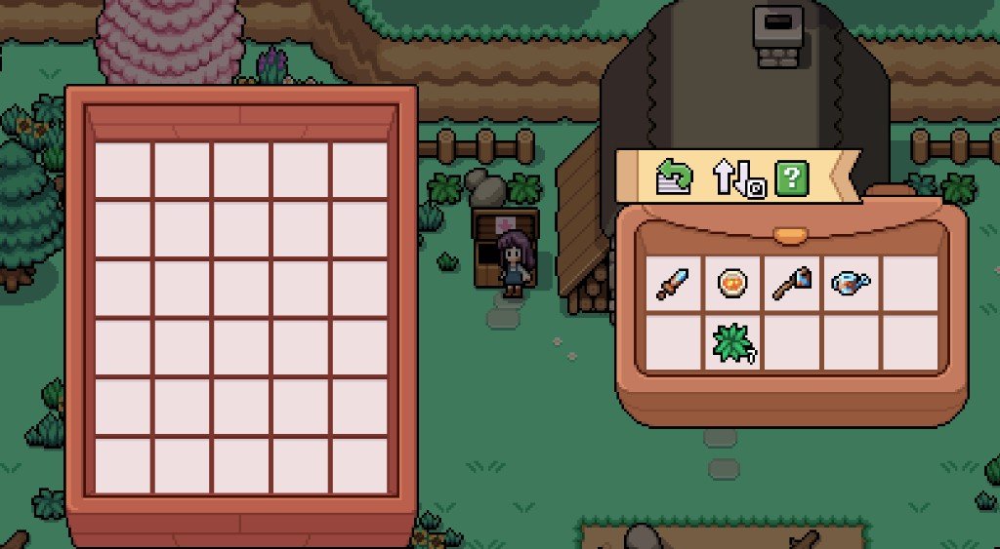
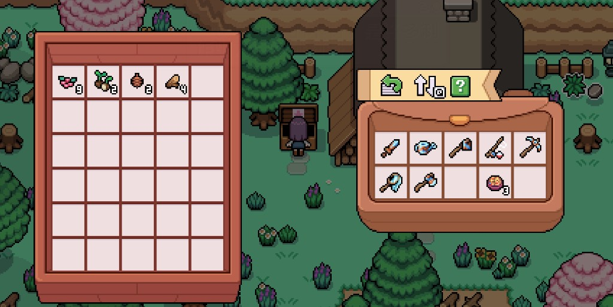
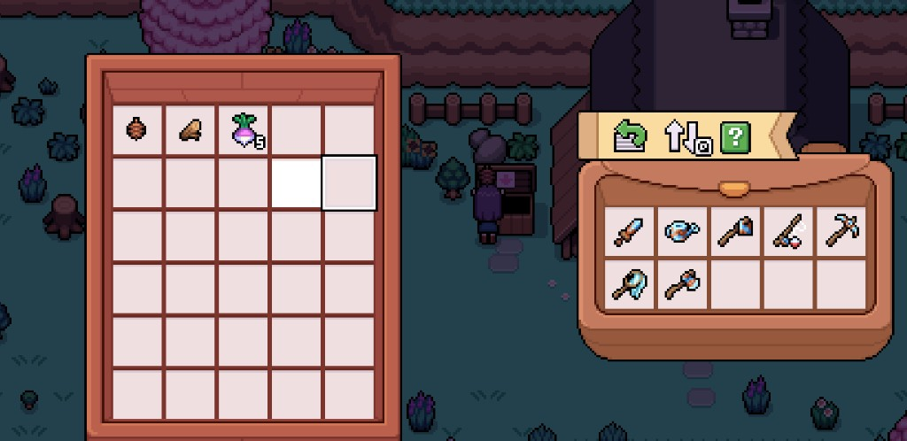

Quick answers
- Place storage near the house and shipping bin.
- Hotbar: tools + one snack.
- Ship sellable junk overnight.
- Upgrade bag space when mornings stall.
- IME / keybind issues: use the menu if a key fails.
Chest habit
Park seeds, quest items, museum candidates, and ores. Label mentally: “quests,” “ship later,” “keep.”
When the bag screams
That is the signal to buy expansion or tidy—not to sell the last quest turnip. Our save hit full bags before noon until chests and shipping caught up.
Safe to skip
- Carrying every rock “for later”
- Sorting perfection before sleep
Screenshots from our save
Real Fields of Mistria shots from our first-season play. Captions in English; in-game UI language may differ.




FAQ
Backpack or tools first?
When you cannot pick up harvests, bag space wins.
Lost an item?
Check chests before restarting the day.
Unofficial fan guide. Not affiliated with NPC Studio. Verify details in your game version.